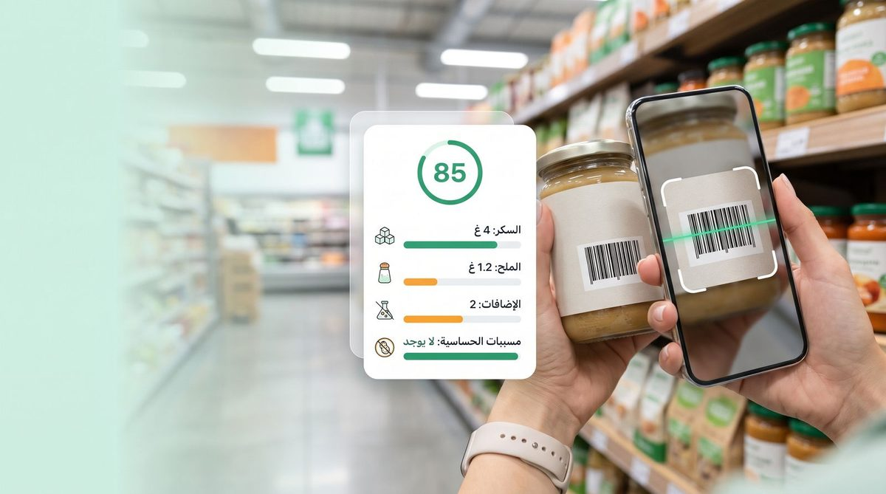

 صحّتي
صحّتي
صحتك فجيبك
📷 مسح بالكاميرا
قرّب الباركود من الكاميرا — يجب أن يكون الموقع مفتوحاً من الهاتف عبر HTTPS (وهو كذلك).
أو اكتب رقم الباركود يدوياً
البيانات من قاعدة Open Food Facts العالمية المفتوحة (القيم لكل 100غ كما هي مكتوبة على التغليف).
شنو هو Nutri-Score؟
شعار كيوضّح الجودة الغذائية ديال المنتجات من A حتى E. تطوّر فـ 2014 من طرف فريق البحث الفرنسي EREN فعلم الأوبئة الغذائية، بقيادة البروفيسور سيرج هيركبرغ.
A
جودة غذائية ممتازةأفضل اختيار — كلو بلا تردد
B
جودة غذائية جيدةاختيار جيد — كول منو بانتظام
C
جودة غذائية متوسطةمتوسط — مرة مرة، ماشي كل نهار
D
جودة غذائية ضعيفةضعيف — نقص منو قد ما تقدر
E
جودة غذائية سيئة جداًسيئ جداً — الأفضل تتفاداه
التقييم محسوب من Open Food Facts على حساب القيم الغذائية المعلنة على التغليف.
💡 ملاحظة: هذه الأدوات تعليمية للتثقيف الصحي العام. إذا كنت تعاني مرضاً مزمناً (سكري، ضغط، كلى...) أو تتناول دواءً، فأي نظام غذائي خاص يجب أن يُضبط مع طبيبك أو مختص تغذية.